大豐環保科技公司
總部職業安全衛生
教育訓練
適用對象：總部辦公室全體同仁
訓練日期：2026 年 5 月
主辦：法務及環安課
「安全不是選項，而是責任。」
一般安全衛生教育訓練課程大綱
依據：職業安全衛生教育訓練規則 第 17 條 一般安全衛生教育訓練應涵蓋下列六大課程類別：
| 編號 | 課程主題（點擊直達） |
|---|---|
| 一 | |
| 二 | |
| 三 | |
| 四 | |
| 五 | |
| 六 | |
| 七 |
本次訓練完全依上述六大法規架構規劃，課程內容依辦公室場所特性設計，涵蓋各核心面向。
一
CATEGORY ONE
作業安全衛生
有關法規概要
有關法規概要
預計時間：10 分鐘
法規概要
雇主與勞工義務（職業安全衛生法）
雇主義務（職業安全衛生法）
| 條文 | 義務重點 |
|---|---|
| 第 5 條 | 雇主使勞工從事工作，應在合理可行範圍內，採取必要之預防設備或措施，使勞工免於發生職業災害。 |
| 第 20 條 | 雇主於僱用勞工時，應施行體格檢查；對在職勞工應施行下列健康檢查： 一、一般健康檢查。 二、從事特別危害健康作業者之特殊健康檢查。 |
| 第 32 條 | 雇主對勞工應施以從事工作與預防災變所必要之安全衛生教育及訓練。 |
| 第 34 條 | 雇主應依本法及有關規定會同勞工代表訂定適合其需要之安全衛生工作守則，報經勞動檢查機構備查後，公告實施。 |
勞工義務（職業安全衛生法）
| 條文 | 義務重點 | ||||||||
|---|---|---|---|---|---|---|---|---|---|
| 第 20 條 | 勞工對於一般安全健康檢查及特殊健康檢查，有接受之義務。 | ||||||||
|
▶ 一般健康檢查頻率（勞工健康保護規則第三章第 17 條）
|
|||||||||
| 第 32 條 | 勞工應接受之義務從事工作與預防災變所必要之安全衛生教育及訓練。 | ||||||||
| 第 34 條 | 勞工對於雇主所訂之安全衛生工作守則，應切實遵行。 | ||||||||
| 第 46 條 | 違反第二十條、第三十二條或第三十四條之規定者，處新臺幣三千元以下罰鍰。 | ||||||||
職業災害定義（第 2 條）：因勞動場所之建築物、機械、設備、原料、材料、化學品、氣體、蒸氣、粉塵等或作業活動及其他職業上原因引起之工作者疾病、傷害、失能或死亡。
二
CATEGORY TWO
職業安全衛生概念
及安全衛生工作守則
及安全衛生工作守則
預計時間：10 分鐘
安衛概念
職安基本概念 & 安全衛生工作守則
職業安全衛生基本概念
| 概念 | 說明 |
|---|---|
| 危害 | 可能造成工作者傷害的環境或行為（如：濕滑地板、電線外露） |
| 風險 | 危害發生的可能性與後果嚴重程度之組合 |
| 事故 | 未預期事件，可能導致人員傷害或財物損失 |
| 職業災害 | 因工作引起的疾病、傷害、失能或死亡 |
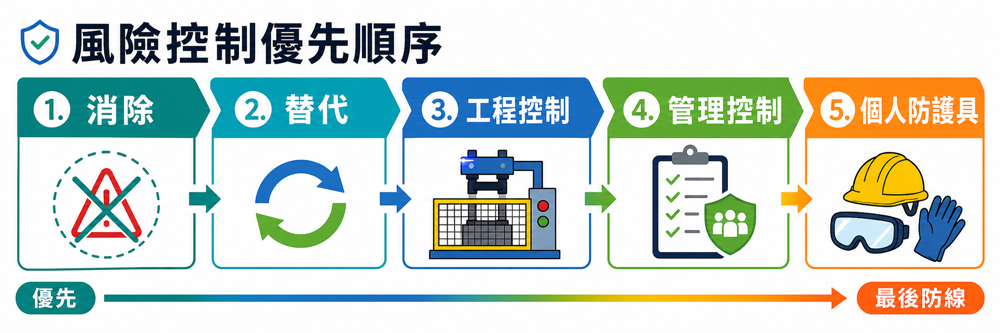
辦公室安全衛生工作守則重點
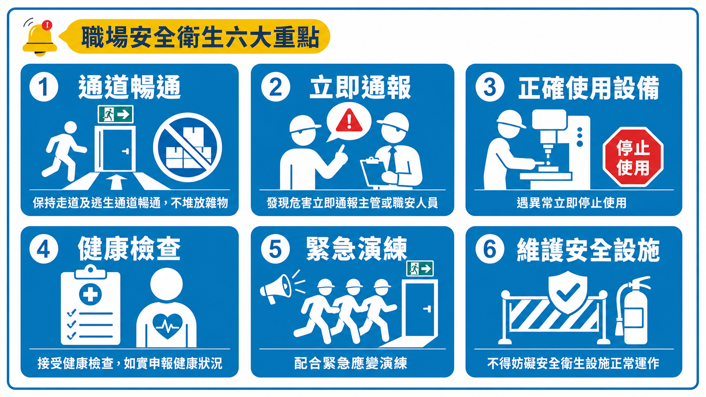
違反工作守則之後果：依《職業安全衛生法》第 46 條，可處新臺幣三千元以下罰鍰；情節重大者另依其他法規辦理。
📂 安全衛生工作守則查閱路徑：
EIP 系統
→
應用程式
→
公司文件
→
ISO 文件管理
→
大豐環保安全衛生工作手冊
三
CATEGORY THREE
作業前、中、後之
自動檢查
自動檢查
辦公室 6S 管理 ｜ 預計時間：10 分鐘
補充
職災統計
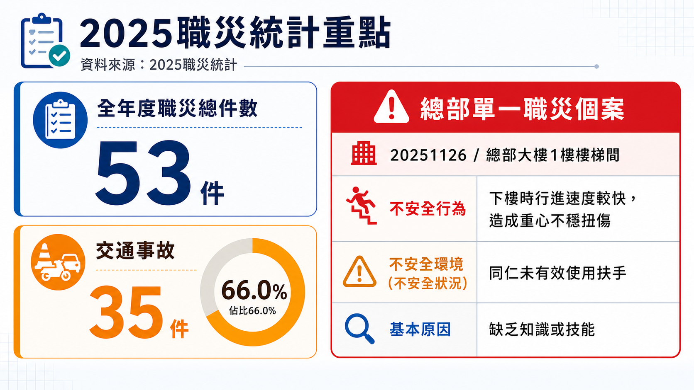
自動檢查
什麼是 6S？
源自日本豐田生產系統，維持安全、高效工作環境的基礎管理法。
Seiri
整理
區分必要與不必要，清除不必要的
Seiton
整頓
必要物品定位放置，取用便利
Seiso
清掃
徹底清潔工作環境
Seiketsu
清潔
維持前三 S 的成果並標準化
Shitsuke
素養
養成遵守規定的習慣與態度
Safety
安全
將安全融入日常工作行為
自動檢查
整理 & 整頓
整理（Seiri）—— 留下必要，去除多餘
「這個東西，最近 30 天內用過嗎？」
沒有 → 考慮移除或封存
辦公桌整理原則
- 文件：已結案→歸檔或銷毀；進行中→桌面可見
- 物品：桌面只留今日工作所需
- 數位：電腦桌面整理，刪除暫存檔
整頓（Seiton）—— 定點、定量、定標示
| 使用頻率 | 收納位置 |
|---|---|
| 高 | 最容易取用（桌面、抽屜頂層） |
| 中 | 次要位置（抽屜深層、書架） |
| 低 | 儲藏室或封存歸檔 |
- 所有文件夾、抽屜、櫃子貼上標示
- 共用物品（如文具）確實歸還至指定位置
- 個人重要物品（鑰匙、印章）保管至安全位置
自動檢查
清掃、清潔、素養 & 安全
清掃（Seiso）—— 清潔即點檢
| 區域 | 頻率 | 責任 |
|---|---|---|
| 個人桌面 | 每日 | 個人 |
| 公用設備 | 每週 | 輪值 |
| 茶水間 | 每日 | 輪值 |
| 會議室 | 每次使用後 | 使用者 |
| 走廊或走道 | 隨時 | 每個人 |
清潔（Seiketsu）：制定6S檢查表，拍攝標準照片對照基準，定期舉辦 6S 評比。
素養 & 安全的核心要求
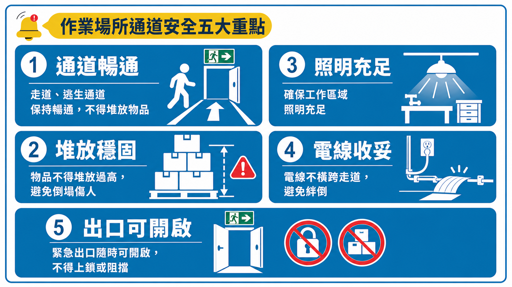
最難也最重要的 S：素養（Shitsuke）。制度是死的，人是活的。從自身做起，以身作則。
自動檢查
總部辦公室6S — 實際案例
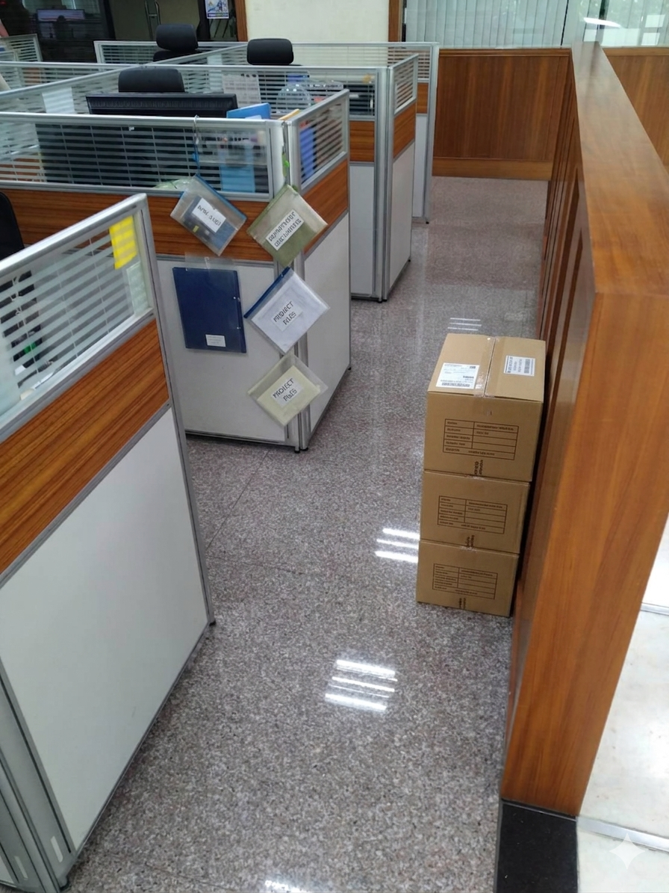
走道堆放雜物，阻礙逃生動線
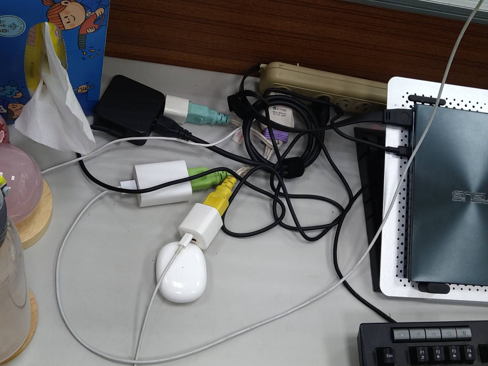
延長線多重串接，過載起火風險

桌面凌亂，影響工作效率與安全

電線使用完畢未收起，造成絆倒危險
四
CATEGORY FOUR
標準作業程序
人因危害・不法侵害・感電預防 ｜ 預計時間：40 分鐘
SOP・人因
什麼是人因性危害？
因工作姿勢、重複動作、長期固定姿態等職業因素，導致肌肉骨骼系統損傷。辦公室工作者是高風險族群。
辦公室常見受害部位
- 頭部：頭痛、偏頭痛
- 眼睛：視力退化、乾眼症
- 頸部：頸椎痠痛、僵硬
- 肩膀：痠痛、發炎
- 手腕：腕隧道症候群
- 背部：下背痛、椎間盤突出
- 腿部：靜脈曲張、水腫、血液循環不良
本主題涵蓋的五大危害
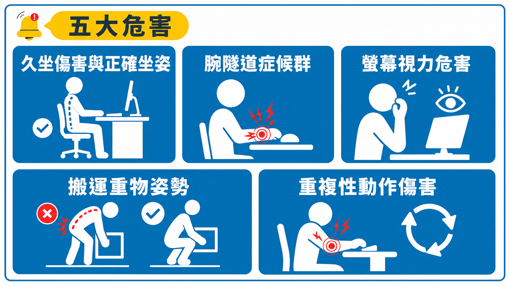
SOP・人因
危害一：久坐傷害
每天久坐超過 8 小時，腰背痛與心血管疾病風險顯著上升。
正確坐姿檢查
| 部位 | 正確姿勢 |
|---|---|
| 螢幕 | 距離 50–70 cm，頂部與眼齊平 |
| 椅背 | 腰部貼靠，支撐腰椎弧度 |
| 膝蓋 | 彎曲 90°，雙腳平放地面 |
| 手肘 | 彎曲 90°，與鍵盤齊平 |
| 頭部 | 自然直立，避免前傾低頭 |
每工作 45–60 分鐘，起立活動至少 5 分鐘。
辦公室伸展四部位
- 頸部：左右側彎各停 10 秒；前後點頭各 10 秒
- 肩膀：雙肩後轉圈 10 次；雙臂前伸十指交扣翻轉
- 腰背：起立向前及向後彎伸展
- 腿部：踮腳尖 20 次；坐姿抬腿伸直保持 10 秒
SOP・人因
危害二 & 三：腕隧道症候群 & 螢幕視力
腕隧道症候群
手腕正中神經受壓，長期使用鍵盤滑鼠的辦公族為好發族群。
症狀警訊
- 拇指、食指、中指麻木刺痛
- 夜間症狀加重影響睡眠
- 手腕無力、難以抓握
手腕伸展三步驟
- 手掌向下，向上折腕保持 15 秒
- 手掌向上，向下折腕保持 15 秒
- 十指交扣旋轉 10 次
螢幕視力危害 — 20-20-20 法則
數位視覺疲勞的黃金對策
每隔 20 分鐘
看向 20 英尺外
持續 20 秒
看向 20 英尺外
持續 20 秒
| 螢幕設定 | 建議 |
|---|---|
| 亮度 | 與環境光線相近 |
| 色溫 | 開啟護眼模式 |
| 字體 | 調整至舒適大小 |
| 眨眼 | 有意識地多眨眼 |
SOP・人因
危害四 & 五：搬運重物 & 重複性動作
正確搬運五步驟
- 蹲低身體，腳打開與肩同寬
- 腰背挺直，核心肌群收緊
- 雙手抱緊物品，靠近身體
- 用腿發力而非腰力站起
- 避免站起同時扭轉身體
| 性別 | 偶爾搬運 | 頻繁搬運 |
|---|---|---|
| 男性 | 25 kg 以下 | 15 kg 以下 |
| 女性 | 15 kg 以下 | 10 kg 以下 |
超過法定重量40kg以上時請尋求協助或使用搬運工具。
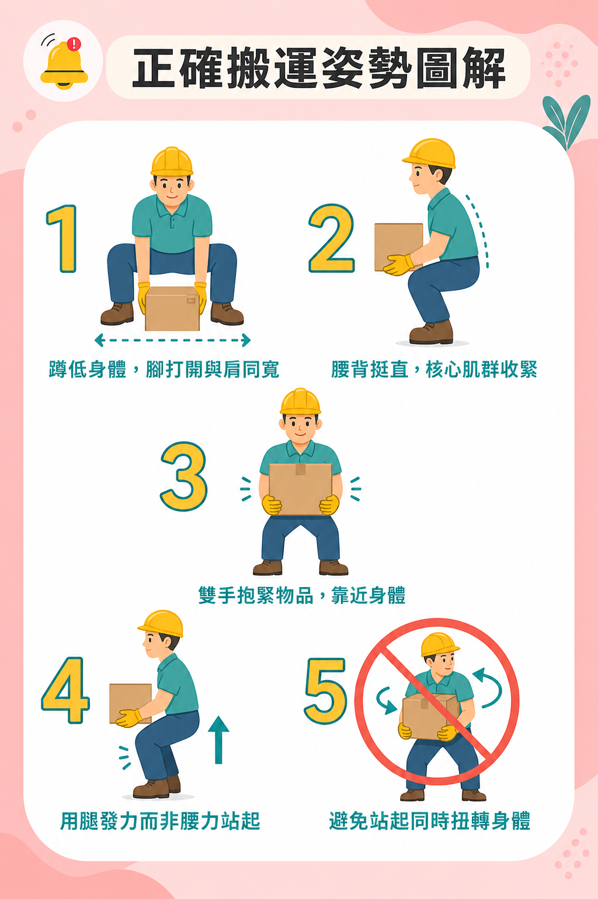
重複性動作傷害
同一動作反覆執行，累積性損傷，初期難以察覺。
常見情境
- 長時間打字、點擊滑鼠
- 重複翻閱文件、資料整理
- 長時間肩夾電話
預防策略
- 交替工作：變換任務類型，分散負荷
- 使用耳機代替肩夾電話
- 學習快捷鍵，減少滑鼠頻率
- 定期進行自我評估
SOP・不法
法規依據與六大不法侵害類型
《職業安全衛生法》第 6 條第 2 項
雇主應妥為規劃及採取必要之安全衛生措施，以預防職場不法侵害引起之危害。
身體攻擊
肢體暴力、推擠、毆打
語言攻擊
謾罵、威脅、恐嚇
精神霸凌
孤立、排擠、嘲弄
性騷擾
言語性、肢體性、環境性
歧視
性別、年齡、身心障礙
過度控管
不合理監視、施加過度壓力
SOP・不法
職場霸凌的樣態與判斷
| 霸凌類型 | 範例行為 |
|---|---|
| 工作阻礙 | 故意不給資源、刻意製造失敗機會 |
| 人際孤立 | 集體排擠、不轉達重要訊息 |
| 言語攻擊 | 公開羞辱、惡意批評、散布謠言 |
| 過度施壓 | 不合理工作量、不可能的期限 |
| 侵犯隱私 | 未經同意翻閱個人物品、監視行蹤 |
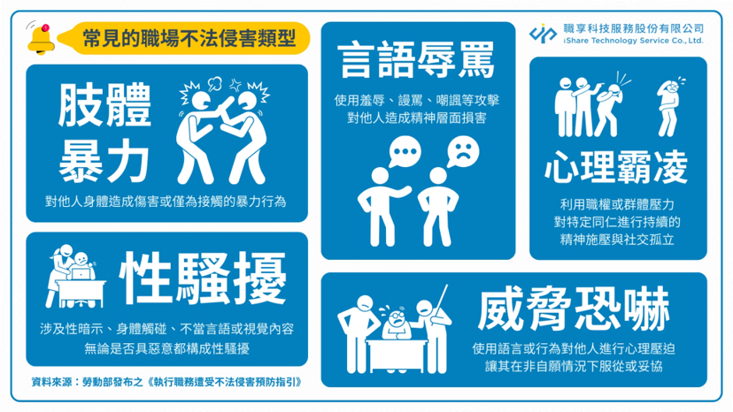
霸凌 vs. 合理管理
合理的績效要求、工作指派、正當懲戒不構成霸凌。關鍵在於：是否具有針對性、反覆性，且造成傷害？
SOP・不法
性騷擾防治
語言性
- 不雅笑話、色情言論
- 詢問私人性生活
- 帶有性暗示的評論
肢體性
- 未經同意的肢體接觸
- 不必要的擁抱、親吻
環境性
- 張貼色情圖片、影片
- 充滿性別歧視氛圍
判斷標準以被行為人的感受為主，而非行為人的主觀意圖。
申訴管道(內部)
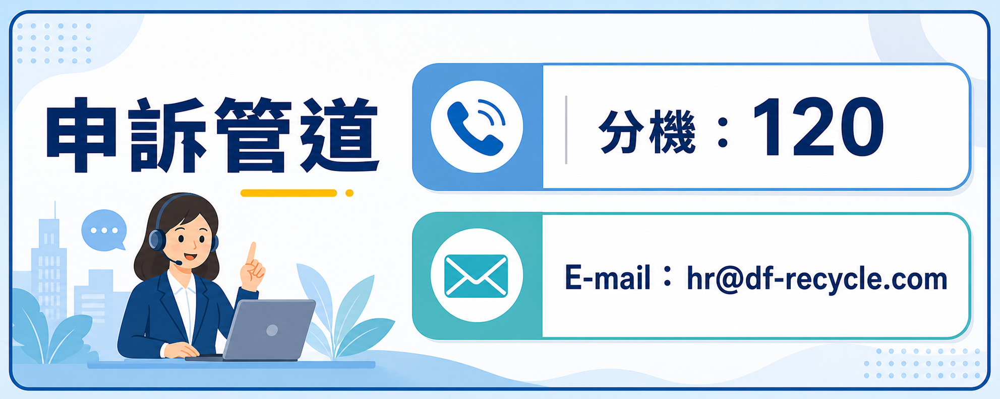
蒐集證據
- 書面紀錄：時間、地點、事件經過
- 保存訊息：Email、即時通訊截圖
- 尋找證人：請在場同事協助
- 就醫紀錄：留下醫療證明
SOP・不法
法律責任與心理支持資源
雇主責任
- 建立申訴機制並確保保密
- 調查後須採取懲處措施
- 提供受害者支援資源
員工責任
- 自身不實施不法侵害
- 目擊時適時介入或通報
- 不報復申訴者
保密承諾：所有申訴案件依法保密，嚴禁對申訴者進行任何形式的報復。
心理支持熱線
分機120
員工協助方案
1925
安心專線
24 小時
24 小時
1980
張老師專線
1995
生命線
SOP・感電
感電的危險性
感電輕則灼傷，重則造成心跳停止或死亡。辦公室雖非高壓環境，仍有多種感電風險。
| 電流大小 | 人體反應 |
|---|---|
| 1 mA | 輕微感覺 |
| 5 mA | 疼痛感 |
| 10–20 mA | 肌肉收縮，無法自主脫離 |
| 50–100 mA | 心室震顫，可能致命 |
| 100 mA 以上 | 死亡風險極高 |
SOP・感電
下班電源清單 & 延長線安全
下班前逐項確認
- 電腦 / 筆電確認關機（非休眠）
- 螢幕電源關閉
- 印表機、掃描機電源關閉
- 個人小型設備關閉(電風扇、桌燈...等)
- 電熱水壺關閉
- 非必要延長線主開關關閉
- 冷氣確認關閉（最後離開者）
建議各部門張貼下班前檢查表，養成習慣。
電線常見危險行為
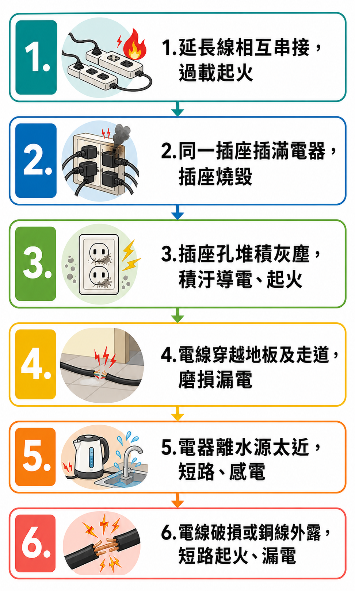
SOP・感電
潮濕環境用電 & 電氣異常處理
危險情境
- 在茶水間、洗手台附近用電
- 手濕時插拔插頭
- 飲料、雨傘滴水靠近電器
水與電，永遠保持距離。
- 茶水間插座配置防潑水蓋
- 手濕必先擦乾再觸電器
- 雨天進辦公室，傘具收於指定區域
異常警訊
- 插座或插頭過熱、有焦味
- 電器運作時異聲或火花
- 開關頻繁跳脫
異常處理步驟
- 立即停止使用該電器
- 通知總務 / 設備維修人員
- 若有焦味冒煙：撤離＋通報＋119
- 等待專業人員，勿自行拆修
五
CATEGORY FIVE
緊急事故處理與演練
預計時間：10 分鐘
緊急應變
緊急通報流程
通報步驟
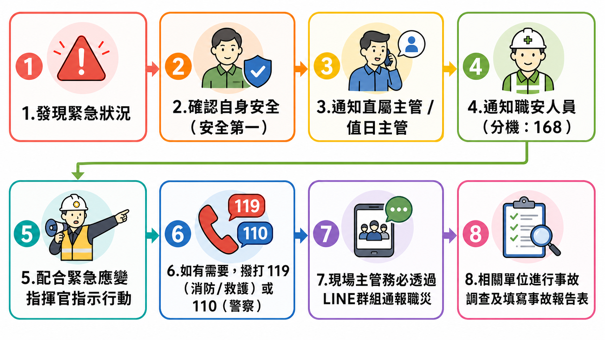
通報時說清楚三件事
1. 發生什麼事
火災、有人受傷、地震…
2. 在哪裡
棟別、樓層、詳細位置
3. 需要什麼協助
急救、救護車、消防…等
| 情境 | 應變類型 |
|---|---|
| 火災 | 消防應變（另由消防講師說明） |
| 地震 | 地震應變 |
| 人員傷亡 | 急救與緊急通報 |
| 颱風 / 停電 / 淹水 | 天災應變 |
緊急應變
地震應變
DROP
趴下
立即蹲低或趴下，降低重心
COVER
掩護
堅固桌子下方
手護頭頸部
遠離窗戶玻璃及架子
手護頭頸部
遠離窗戶玻璃及架子
HOLD ON
穩住
抓住掩護物
維持姿勢
直到震動完全停止
維持姿勢
直到震動完全停止
地震後確認
- 確認自身及同事是否受傷
- 檢查周圍是否有火災或漏氣
- 依指示有序疏散，禁搭電梯
- 到達集合點後回報人數
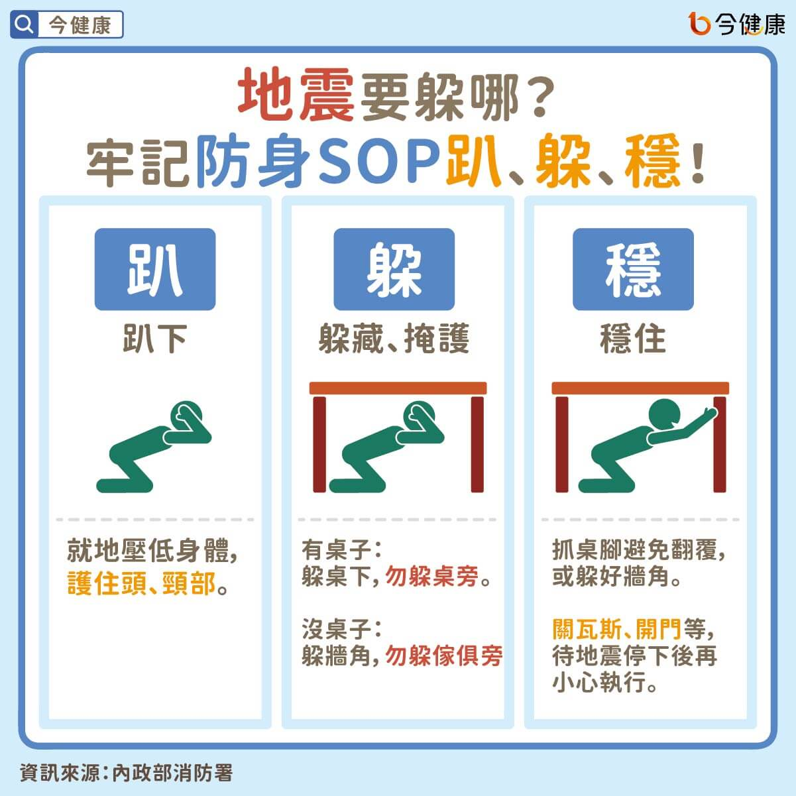
其他天災應變
| 情況 | 處置 |
|---|---|
| 途中遇颱風 | 尋找安全地點避難，勿強行通勤 |
| 停電 | 儲存作業，待命指示 |
| 淹水 | 切斷電源，依指示疏散 |
緊急應變
逃生路線 & 基本急救
逃生原則
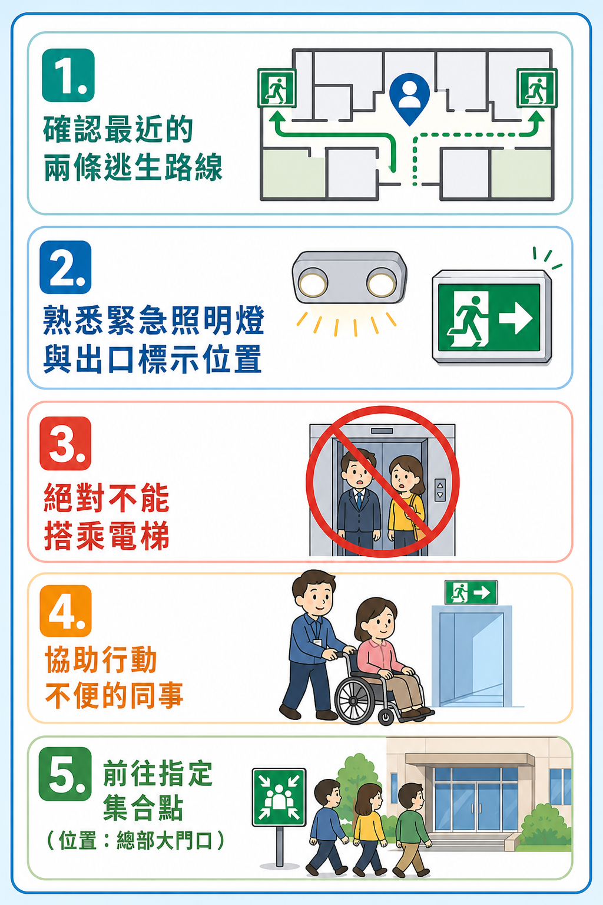
遇到有人昏倒怎麼辦？
- 確認現場環境是否安全，包含自身安全
- 確認傷患意識，呼叫、輕拍肩膀
- 大聲呼救，請人撥打 119
- 確認呼吸（看胸部起伏，10 秒內）
沒有呼吸
立即 CPR，請人取 AED
立即 CPR，請人取 AED
有呼吸
復甦姿勢，等待救援
復甦姿勢，等待救援
AED操作
開機後依語音指示，任何人都能操作。
開機後依語音指示，任何人都能操作。
六
CATEGORY SIX
其他與作業業務有關之
安全衛生知識
安全衛生知識
交通安全・健康促進 ｜ 預計時間：25 分鐘
其他・交通
防禦性駕駛五大原則
依勞動部統計，交通事故是職業災害的重要肇因之一，尤其上下班途中及公務出差最為常見。
| 原則 | 說明 |
|---|---|
| 預判危險 | 隨時觀察路況，預測可能的風險 |
| 保持車距 | 遵守「2 秒或3 秒法則」「÷2 或-20 法則」以上的安全距離 |
| 速度適中 | 依路況調整車速，不超速也不慢速 |
| 不爭道 | 讓路而非搶路，避免競爭心態 |
| 保持清醒 | 疲勞、情緒波動時不開車 |
即使綠燈，也應確認左右無來車後再行進。
其他・交通
惡劣天氣 & 疲勞駕駛
雨天行車注意
| 項目 | 注意事項 |
|---|---|
| 車速 | 降低 30% 以上 |
| 車距 | 延長為平時的 1.5–2 倍 |
| 雨刷 | 出發前確認功能正常 |
| 積水路段 | 緩慢通過，不猛踩煞車 |
| 水漂現象 | 速度過快輪胎失附著力，需提前減速 |
疲勞駕駛
持續清醒 18 小時的駕駛
反應能力 = 血液酒精濃度 0.05%
反應能力 = 血液酒精濃度 0.05%
感到疲勞時 → 立即找安全地點靠邊停車
休息 15–20 分鐘後再上路
長途每 2 小時休息一次
休息 15–20 分鐘後再上路
長途每 2 小時休息一次
絕不能做：搖下車窗吹風、靠意志力硬撐
其他・交通
分心駕駛 & 機車 & 行人安全
分心駕駛
傳一則訊息
眼睛離開路面 5 秒
= 盲目行駛 83 公尺
（時速 60 km）
眼睛離開路面 5 秒
= 盲目行駛 83 公尺
（時速 60 km）
✓ 行前設定導航
✓ 藍牙免持聽筒
✓ 靠邊停車再回訊息
✓ 藍牙免持聽筒
✓ 靠邊停車再回訊息
機車通勤安全
機車事故死亡率遠高於汽車，請特別重視。
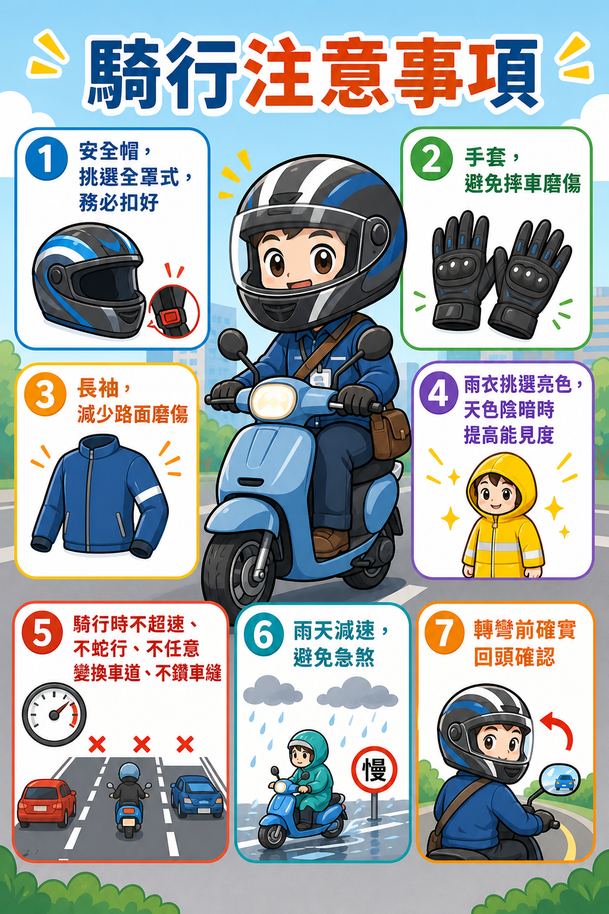
行人 & 出差前
- 過馬路走斑馬線，確認燈號
- 過路口時注意路況
- 夜間配戴反光配件
- 電扶梯抓好扶手
出差行車前確認
- 輪胎氣壓與磨損
- 煞車與雨刷功能
- 充分休息再出發
- 出差行程確實報備
其他・健康
規律運動 & 職場飲食
WHO 建議
150 分鐘
成人每週中等強度有氧運動
增加活動量的小技巧
- 大眾交通提早一站下車步行
- 電梯改走樓梯
- 午休 10 分鐘伸展或步行
- 每週安排 2–3 次健身活動
職場飲食健康
| 常見問題 | 影響 |
|---|---|
| 不吃早餐 | 午前專注力下降 |
| 外食過鹹過油 | 心血管風險上升 |
| 含糖飲料過多 | 下午精神不振 |
| 久坐不喝水 | 脫水影響大腦效率 |
每日至少喝 1,500–2,000 ml 白開水
咖啡每日不超過 2–3 杯，下午後避免
咖啡每日不超過 2–3 杯，下午後避免
其他・健康
睡眠管理 & 認識工作壓力
建議睡眠時數
| 年齡層 | 建議時間 |
|---|---|
| 18–64 歲 | 6–8 小時 |
| 65 歲以上 | 7–8 小時 |
改善睡眠品質
- 固定就寢與起床時間（含假日）
- 睡前 1 小時遠離手機、平板、電腦、電視、遊戲機
- 保持臥室涼爽、黑暗、安靜
- 午後 3 點後避免咖啡因
壓力的兩面性
| 適度壓力（正向） | 過度壓力（負向） |
|---|---|
| 提高動力與效率 | 焦慮、憂鬱 |
| 促進學習與成長 | 睡眠障礙 |
| 增強解決問題能力 | 免疫力下降 |
| — | 職業倦怠（Burnout） |
常見壓力來源
- 工作量過大或過小
- 角色不明確或衝突
- 缺乏自主性與掌控感
- 工作與生活不平衡
其他・健康
職業倦怠 & 壓力管理技巧
職業倦怠（Burnout）
WHO 已列為職業現象，源於慢性工作壓力未妥善處理。
三大特徵
- 情感耗竭：精疲力竭，失去熱情
- 去人性化：對同事客戶冷漠
- 成就感低落：覺得工作無意義
早期警訊
- 週日晚上開始焦慮「明天要上班」
- 對曾經喜歡的工作感到厭倦
- 頻繁請假或想離職
壓力管理技巧
4-7-8 呼吸法（即時減壓）
吸氣 4 秒 → 憋氣 7 秒 → 吐氣 8 秒
重複 3–4 次，快速緩解緊張感
5-4-3-2-1 接地技巧（焦慮時）
- 說出5 個看到的東西
- 碰觸4 個碰到的東西
- 聆聽3 個聽到的聲音
- 找出2 個聞到的氣味
- 品嘗1 個嘗到的味道
非暴力溝通（NVC）：觀察 → 感受 → 需要 → 請求
其他・健康
健康促進資源
| 資源 | 說明 |
|---|---|
| 年度健康檢查 | 公司安排健檢，每兩年一次 |
| 職護協助方案 | 健康諮詢，全程保密，一對一諮詢，每月一次 |
| 安心專線（24 小時） | 1925 |
| 張老師專線 | 1980 |
| 生命線 | 1995 |
尋求協助是勇氣，不是軟弱。
其他・健康
職業病預防 & 清潔劑化學品安全
常見職業病預防
| 職業病 | 預防方式 |
|---|---|
| 腕隧道症候群 | 人體工學設備、定時伸展 |
| 下背痛 | 正確坐姿、每小時起立 |
| 乾眼症 | 20-20-20 法則 |
| 頸椎病 | 螢幕高度調整 |
| 職業性聽力損失 | 耳機音量控制 60% 以下 |
清潔劑化學品安全
- 存放在原包裝容器，不自行分裝至無標示容器
- 不混合不同清潔劑（可能產生有毒氣體）
- 使用時保持通風
- 必要時配戴手套
- 備妥安全資料表（SDS）
其他・健康
夏日熱傷害預防
熱傷害類型與處置
| 類型 | 處置 |
|---|---|
| 熱痙攣 | 休息、補水、電解質 |
| 熱衰竭 | 休息、補水、電解質、將患者腳抬高 |
| 熱中暑 | 頭稍微墊高並立即送醫 |
- 避免正午（11–14 時）戶外高強度活動
- 每 15–20 分鐘補充水分
- 配戴遮陽帽，穿著淺色透氣衣物

＋
SUPPLEMENTARY TOPICS
補充主題
訪客管理・資訊安全
補充
訪客管理・資訊安全
訪客 & 外包商管理
- 訪客進入須登記換證
- 不得無陪同進入限制區域
- 發現陌生人主動詢問或通知警衛
- 承攬商進場前應提供職安資料
- 有安全顧慮立即向職安人員反映
資訊安全基本習慣
- 離開座位鎖定電腦（Win + L）
- 列印後立即取件，避免資料外洩
- 廢棄文件使用碎紙機銷毀
- 不開啟可疑郵件或連結
- 帳號密碼不共用，定期更換
課程重點回顧
| 課程類別 | 核心行動 |
|---|---|
| 一 法規概要 | 了解雇主與勞工義務，違反規定有罰則 |
| 二 安衛概念 | 危害識別、風險評估，切實遵守安全衛生工作守則 |
| 三 自動檢查 | 落實 6S 管理，維持整潔有序的安全工作環境 |
| 四 標準作業程序 | 正確姿勢工作、共建友善職場、下班確認電源安全用電 |
| 五 緊急應變 | 熟記通報流程，了解逃生路線與集合點位置 |
| 六 其他知識 | 防禦性駕駛不分心，規律運動充足睡眠，適時排解壓力 |
安全是每個人的責任，不只是職安部門的工作。
- 發現危險，說出來
- 看到不對，採取行動
- 遇到問題，尋求協助
重要聯絡資訊
職安相關諮詢
職安室 分機：168
人身安全申訴
人資 分機：110
設備異常通報
總務 分機：155
緊急事故
119 / 110
Q & A 時間
有任何問題，歡迎提問。
沒有笨問題，只有沒問到的風險。
119
緊急消防/救護
110
報警
1925
安心專線
感謝各位的參與
祝大家工作順利、平安健康。
「我安全，我回家。」
大豐環保科技公司
職業安全衛生管理室
2026 年 5 月
職業安全衛生管理室
2026 年 5 月